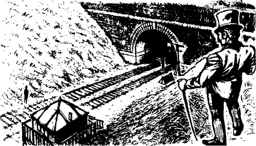
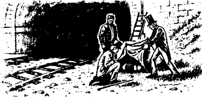
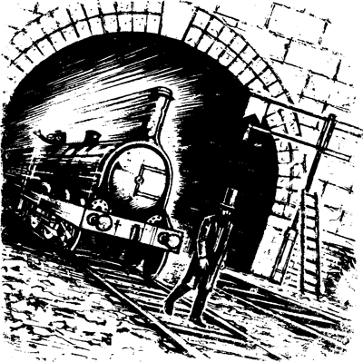

Ngày hôm sau trời nắng ấm. Vào lúc chiều tà, tôi đi ra bờ kè đường sắt. Nắng chiếu rất chói.
Tôi đi lên bờ kè phía trên.
‘Tôi đã đứng đây hai ngày trước,’ – tôi nghĩ – ‘Tôi đứng trên dốc này và nhìn xuống bờ kè.’
Tôi lại nhìn về phía đường hầm. Tôi thấy một bóng người. Hắn đứng gần lối vào đường hầm. Tay trái của hắn che trước mặt. Hắn dang tay phải qua lại!
Thật khủng khiếp! Tôi thấy ớn lạnh. Tôi run rẩy khắp người. Đó là một... ma à! Tôi nhắm nghiền mắt lại.

Rồi tôi mở mắt ra và nhìn lại. Không, đó không phải là ma. Đó là một người đàn ông. Và có một người đàn ông khác đang dõi mắt theo hắn.
Đèn báo hiệu màu đỏ không sáng. Lối vào đường hầm rất tối. Gần cột tín hiệu có một cái lều - một cái lều nhỏ màu xanh.
‘Chuyện gì đã xảy ra?’ – tôi tự hỏi – ‘Có chuyện gì không ổn vậy?’
Tôi chạy xuống lối đi ở cuối bờ kè. Tôi chạy đến chỗ hai người đàn ông kia, gần đường hầm.
‘Chuyện gì đã xảy ra vậy?’ – tôi hỏi họ.
Người đàn ông ở cửa hầm dừng vẫy tay.
‘Chiều nay có một chuyến tàu đã đâm chết một nhân viên tín hiệu ở đây, thưa ngài,’ – người đàn ông kia nói. Hắn thấp và gầy. Hắn mặc áo khoác sẫm màu và đội mũ cao.
‘Có phải nhân viên tín hiệu ở hộp tín hiệu này không?’ – tôi hỏi. Tôi chỉ vào tòa nhà gỗ nhỏ phía sau mình.
‘Vâng, thưa ngài,’ – người đàn ông thấp gầy đáp.
‘Ồ không!’ – tôi thốt lên.
‘Ngài có quen biết anh ta không?’ – người đàn ông kia hỏi.
‘Có,’ – tôi từ tốn đáp – ‘Anh ta là một nhân viên tín hiệu tốt.’
Người đàn ông kia giơ một bên lều lên. Tôi nhìn xuống gương mặt nhợt nhạt, đã khuất của người nhân viên tín hiệu.

‘Phải, tôi biết người nhân viên tín hiệu này,’ – tôi nói – ‘Chuyện gì đã xảy ra với anh ta vậy? Chuyện gì đã xảy ra?’
‘Một chuyến tàu đã đâm vào anh ta, thưa ngài,’ – người đàn ông kia đáp – ‘Anh ta đã làm tốt nhiệm vụ của mình. Nhưng anh ta đã đứng trên đường ray. Tai nạn xảy ra vào chiều nay. Người nhân viên tín hiệu kia đã cắm cờ đỏ lên cột. Đó là tín hiệu cảnh báo dành cho chuyến tàu tới London. Nhưng rồi anh ta lại đứng trên đường ray, trên Đường ray phía dưới. Tại sao anh ta lại làm thế nhỉ, thưa ngài?’
‘Tôi không rõ nữa,’ – tôi đáp – ‘Rồi sao nữa?’
‘Một chuyến tàu đi qua đường hầm,’ – người đàn ông kia nói – ‘Chuyến tàu đó đã đâm vào người nhân viên tín hiệu.’
‘Đây là tài xế lái tàu, thưa ngài,’ – hắn nói. Hắn chỉ vào người đàn ông kia bên cột tín hiệu – ‘Tom, kể với quý ông này câu chuyện của anh đi.’
‘Tôi đã nhìn thấy ngài từ trên đỉnh bờ kè,’ – tôi nói với Tom – ‘Anh đã vẫy tay.’
‘Vâng, thưa ngài,’ – hắn đáp – ‘Tôi đang kể cho người đàn ông này về vụ tai nạn.’
‘Làm ơn kể cho tôi nghe,’ – tôi nói.
‘Tôi đang lái tàu chạy qua đường hầm,’ – Tom kể – ‘Tôi thấy ánh sáng ban ngày ở cuối đường hầm. Rồi tôi thấy người nhân viên tín hiệu kia trên đường ray. Anh ta đang nhìn chằm chằm vào cột tín hiệu. Tàu đang chạy rất nhanh. Tôi cố gắng dừng tàu lại. Trên tàu có một cái chuông rất to, thưa ngài. Tôi đã rung chuông, nhưng người nhân viên tín hiệu không nghe thấy. Anh ta bắt đầu đi dọc theo đường ray. Tôi hét lên với anh ta. Tôi hét rất to.’
‘Anh đã hét lên những gì vậy?’ – tôi hỏi.
‘Tôi hét lên: “Alo! Alo! Nguy hiểm! Nguy hiểm! Hãy tránh ra! Làm ơn, làm ơn, hãy tránh ra!” – Tom nói – ‘Nhưng người nhân viên tín hiệu kia không nghe thấy tôi, thưa ngài. Và anh ta cũng không nghe thấy tiếng tàu!’

Người tôi run rẩy. Tôi thấy lạnh và sợ hãi.
‘Ôi Chúa ơi!’ – người lái tàu nói – ‘Thật kinh khủng. Tôi cứ hét mãi mà người nhân viên tín hiệu kia vẫn không nghe thấy. Tôi không thể nhìn anh ta được nữa. Tôi lấy một tay che mặt. Tôi vẫy tay kia sang hai bên. Tôi đã làm như thế này đây, thưa ngài. Nhưng anh ta không nhìn thấy tôi.’
Tôi tạm biệt hai người đàn ông kia. Thật buồn khi tôi phải rời khỏi bờ kè đường sắt.
Tôi cứ nghĩ mãi về những lời của người tài xế lái tàu kia. Trước đây tôi đã nghe những lời đó rồi!
Tôi đã từng hét lên ‘Alo! Alo!’ với người nhân viên tín hiệu kia. Tôi đã hét lên như vậy khi lần đầu ghé thăm hộp tín hiệu của anh ta.
Con ma đã hét lên ‘Nguy hiểm! Nguy hiểm!’ với người nhân viên tín hiệu kia.
Và tôi đã thốt lên những lời: ‘Hãy tránh ra! Làm ơn, làm ơn, hãy tránh ra!’
Nhưng không! Tôi đã không nói những lời đó thành tiếng. Tôi đã nghĩ những lời đó trong đầu!
Tôi nhớ lại chuyến thăm thứ hai của mình đến gặp người nhân viên tín hiệu kia. Anh ta đã kể về con ma kia. Đây là lời anh ta đã nói:
Hắn ta dùng tay trái che mặt. Hắn ta dang tay phải qua lại.
Và tôi nhớ lại những suy nghĩ của mình đêm hôm đó.
Đây là những suy nghĩ của tôi:
Những người sợ hãi thường vẫy tay và hét lên. Họ hét lên rằng: ‘Hãy tránh ra! Làm ơn, làm ơn, hãy tránh ra!’
Tôi đã không nói những lời đó. Tôi đã nghĩ như vậy. Đó là những lời tôi nghĩ trong đầu.
Và hôm nay, người lái tàu đã hét lên một số lời như vậy - những lời từ trong suy nghĩ của tôi.
Cái kết của câu chuyện này cũng lạ lùng như chính cái mở đầu.